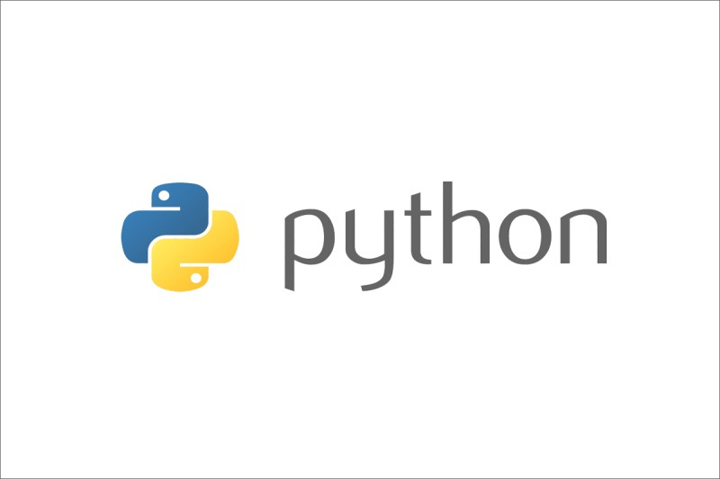
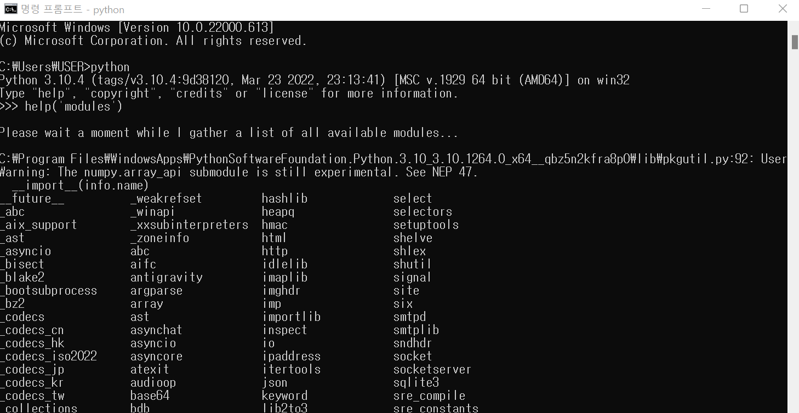

Python은 정말 활용도가 높은 코딩 언어이다. 파이썬을 이용해 투자에 활용하거나 빅데이터 분석도 할 수 있다! 작년 디벨로퍼스에서 처음 파이썬을 접했는데 확실히 html이나 css 보다는 더 많은 사고가 필요했다. 개인적으로 코딩을 처음 시작할 때는 파이썬이 재미가 약간 없어서^^; 그렇게 좋은 선택은 아닐 수도 있다고 생각한다. 하지만 코딩에 재미를 붙인 후에는 꼭 파이썬을 배워보면 크게 도움이 될 것 같다. 가장 실질적인 코딩 언어이기도 하고 다른 코딩 언어와도 관련이 커서 파이썬을 배워두면 다른 코딩 언어를 할 때 조금 더 쉽게 할 수도 있다. 나는 실제로 JavaScript를 할 때 문법이 파이썬과 비슷한 점이 많이 있어서 비교적 쉽게 JS를 할 수 있었다.
좋은 기회가 생겨서 파이썬을 제대로 배울 수 있게 되었다. 파이썬을 통한 통계 분석을 통해 모의 주식 투자를 하는 것이다. 매주 월, 수 자습시간에 진행! 박철용 쌤의 경제 수업도 들을 수 있어서 좋았다.
 